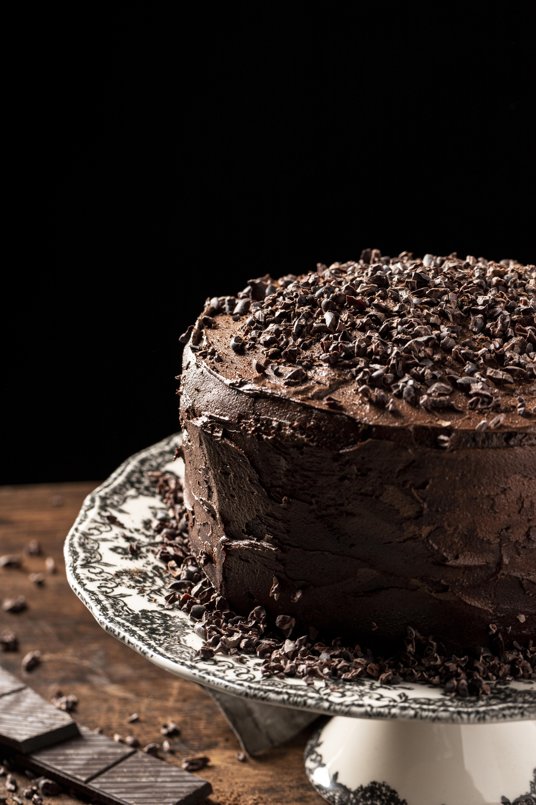

Bolo de Chocolate
Vamos aprender a fazer um bolo de chocolate bem macio e fofinho!
Ingredientes e Utensílios
Ingredientes:
- 3 ovos
- 100ml de óleo
- 150ml de leite
- 450g de farinha de trigo
- 50g de manteiga ou margarina
- 150g de açúcar
- 50g de chocolate 50%
- 1 colher de sopa de fermento em pó (Pó Royal)
Utensílios:
- Recipiente
- Colheres
- Desmoldante (ou manteiga e farinha)
- Forno
- Forma (tabuleiro)
Preparo
1. Pré-aqueça o forno a 180°C por 5 minutos.
2. Em um recipiente, misture todos os ingredientes secos (farinha, açúcar, chocolate e fermento) e reserve.
3. Quebre os ovos um a um em um copo para verificar se estão bons e acrescente-os à mistura.
4. Junte o óleo, a manteiga e o leite. Misture tudo muito bem com um fouet ou colher até obter uma massa homogênea.
5. Unte a forma com o desmoldante ou com manteiga e farinha de trigo.
6. Coloque a massa na forma e leve para assar por aproximadamente 40 minutos. (Faça o teste do palito!)
7. Assim que assar, espere amornar para desenformar e sirva.
Imagens de Exemplo
